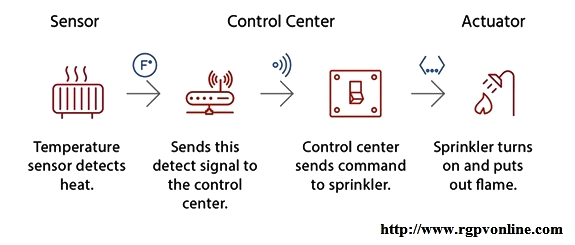

Q3: write short notes on Actuator.
Ans. :
• A device or mechanism capable of performing a physical action. Actuators interact with the world. Sensors capture information from the world.
• The interface between the microcontroller and the sensors or the actuators is either analog or digital.
• An actuator requires a control signal and a source of energy. An actuator is the mechanism by which a control system acts upon an environment. The control system can be simple, software-based, a human or any other input.
• When the actuation is a motion, motor have to be used for rotational or linear motion.
• The selection of the proper actuator is more complicated than selection of the sensors, primarily due to their effect on the dynamic behavior of the overall system. Furthermore, the selection of the actuator dominates the power needs and the coupling mechanisms of the entire system.

• In typical IoT systems, a sensor may collect information and route to a control center where a decision is made and a corresponding command is sent back to an actuator in response to that sensed input.